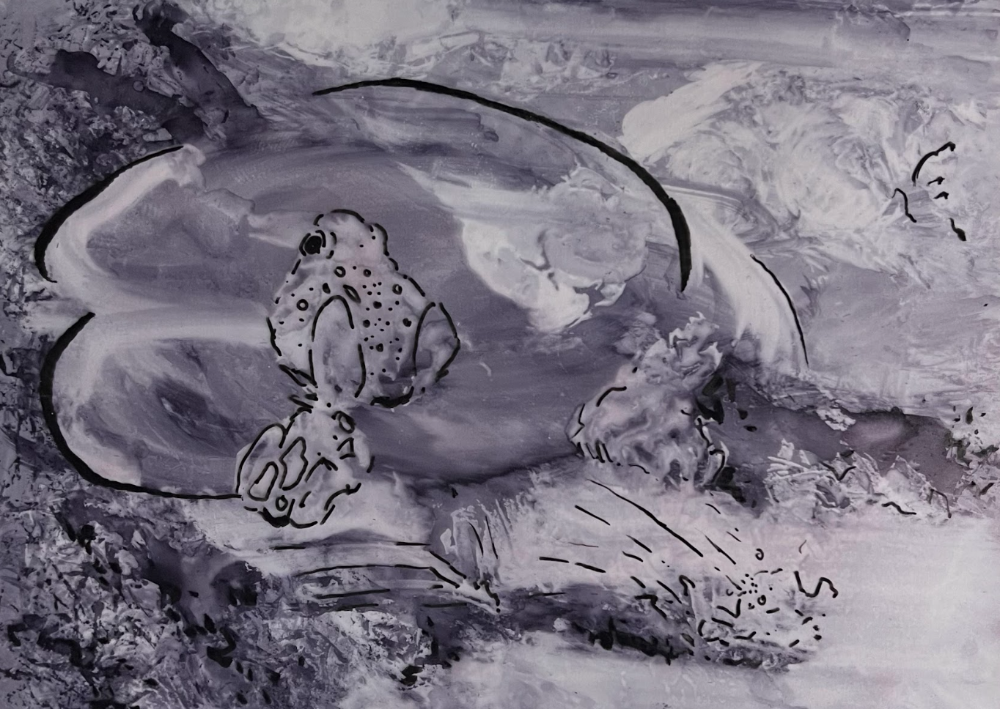

Detalles
El proyecto surge de la observación de elementos cotidianos, dándoles una segunda oportunidad al mirarlos desde otro punto de vista. De esta forma conseguiremos que objetos que pasarían desapercibidos por nuestro modelo de sociedad, recuperen su encanto y llamen nuestra atención.
El tamaño de los subproyectos irá decreciendo a medida que se elabore otro, con el fin de desafiar a las personas realmente observadoras.
El principal nexo de este proyecto es la ciencia.

Propuesta de matrices
Matrices realizadas con la experimentacion de técnicas como tinta china, grafito y fotografías.